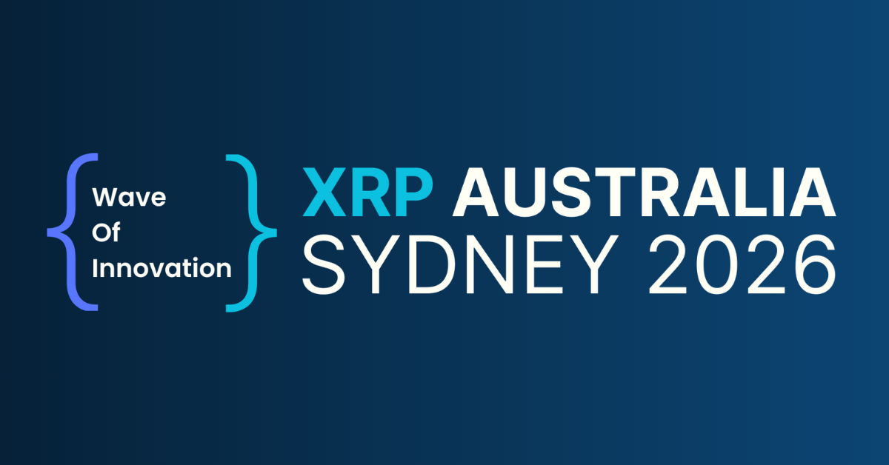

This Week on the Ledger — February 28, 2026

February 28, 2026 — Weekly Roundup
If there was a single week this year that captured where the XRP ecosystem actually stands — not where it's been, not where speculators hope it goes, but where it is right now — it was this one.
XRP Australia 2026 took place on February 27 at Crown Towers Sydney, Barangaroo. Organized by Wave of Innovation, the event brought together over 400 attendees and 30+ speakers for a full-day summit covering stablecoins, real-world assets, cross-border payments, CBDCs, tokenization, and the regulatory landscape across the Asia-Pacific region. Ripple CEO Brad Garlinghouse and President Monica Long both attended. CTO Emeritus David Schwartz was on stage. The institutional panel included representatives from Coinbase and Independent Reserve.
This wasn't a community meetup. This was Australia's financial and blockchain leadership in one room, working through the actual mechanics of what deployment looks like.
Here's what came out of it.
Brad Garlinghouse Addresses the "Flip the Switch" Narrative — Directly
The phrase has been circulating since January 2019, when Garlinghouse told Fortune that banks were ready to "flip the switch" after completing xRapid pilots. The crypto community latched on to it, and over the years it calcified into a specific expectation: one dramatic moment, one master trigger, one event that would activate XRP at scale.
In Sydney, Garlinghouse addressed it head-on.
There is no single switch. There never was. Ripple operates with hundreds — potentially thousands — of smaller switches, and the company has been flipping them steadily. Some took longer than expected. None of them were the one big event that parts of the community were waiting for.
What he described instead is a company executing incrementally across markets — partnerships, product rollouts, corridor expansions, regulatory approvals — with each step adding to a larger cumulative outcome. His framing was direct: steady execution over time is the strategy. It has always been the strategy.
He also put a number on what that execution looks like. Since 2023, Ripple has spent $3 billion on acquisitions, with the explicit goal of bridging traditional finance with decentralized finance. That's not a company waiting to flip one switch. That's a company building the infrastructure that makes the switches possible.
For anyone tracking Ripple closely, this reframe matters. It resets the expectation that any single announcement — an ETF approval, a regulatory win, a major bank partnership — will be the moment everything changes. The picture Garlinghouse is painting is one where it already is changing, incrementally, across dozens of markets simultaneously.
Monica Long and David Schwartz on Stage
Garlinghouse wasn't alone. Ripple President Monica Long joined him on stage in Sydney, and CTO Emeritus David Schwartz participated in discussions covering technology development and global expansion.
Schwartz's presence in particular is worth noting in context. Earlier this month, he publicly pushed back on what he called "nonsensical" centralization accusations against the XRP Ledger — a recurring criticism that Ripple's relationship with XRPL gives it undue control over the network. His appearance at an event focused on institutional adoption and regulatory clarity signals that the technical credibility conversation is happening alongside the business development one, not separately.
The Institutional Layer Panel
One of the day's centrepiece sessions was the Institutional Layer Panel at 13:55. The lineup:
- Alexis Sirkia — Yellow
- Rachael Jones — AUDD Digital (Australia's regulated AUD stablecoin)
- Adrian Przelozny — Independent Reserve
- Danella Draper — Wave of Innovation
- John O'Loghlen — Coinbase
Having Coinbase on a panel explicitly focused on the institutional layer in the Asia-Pacific region is not a small thing. AUDD Digital's presence alongside them points directly to where stablecoin infrastructure in Australia is headed — not hypothetically, but in active deployment.
The Topics on the Table
The agenda at XRP Australia covered the themes that matter most to anyone watching how the XRPL ecosystem matures:
Stablecoins — RLUSD crossed $1 billion in circulation late last year. AUDD is Australia's regulated fiat-backed equivalent. The conversation in Sydney wasn't about whether stablecoins work. It was about how they get integrated into existing payment rails.
Real World Assets — Tokenizing traditional assets onto public ledgers is moving from pilot to production in several corridors. The question is which infrastructure institutions trust enough to use at scale. The Permissioned DEX and Token Escrow upgrades that activated on XRPL earlier this month — covered in our last technical update — are directly relevant here.
Cross-Border Payments — This is the core use case Ripple was built around. Traditional international payments still take 3–5 days, cost $25–50 per transaction, and carry a 5% error rate. XRPL settles in 3–5 seconds at sub-cent cost. The gap is not technical anymore. It's institutional — compliance, counterparty verification, regulatory clarity. The Permissioned DEX addresses exactly that.
CBDCs — Several APAC central banks are deep into CBDC development. The XRP Ledger's architecture — specifically its support for authorized trustlines, clawback, and now permissioned trading environments — maps well onto the requirements central banks have articulated publicly.
Regulatory Landscape — Australia's regulatory environment for digital assets has been in active development. The Sydney event brought together the people building that framework alongside the people who have to operate within it.
The Security and Privacy Sessions
Two of the day's speakers addressed a dimension of crypto adoption that doesn't get enough attention at conferences focused on institutional deployment: the security layer.
Graeme Speak, Cybersecurity Expert and Founder of BankVault/VanishingPoint Security, spoke on the "Security and Privacy in Crypto — Duty of Care" panel. His work focuses on what he calls "invisibility architecture" — patented innovations in advanced crypto wallet security. The duty of care framing is significant: as institutional players enter the space, the question of who is liable when assets are lost or compromised becomes a legal and compliance question, not just a technical one.
Dee (CryptoCoach_AU), Founder of Digi-Secure, also spoke — bringing a retail and education lens to the security conversation. With 30+ years in business and finance, her focus on simplifying digital asset security for everyday users is exactly the kind of work that bridges the gap between institutional-grade infrastructure and the people who actually use it.
The AI + XRPL Thread
Shen Morincome from aigentdotrun spoke on AI's intersection with the XRP Ledger — specifically intelligent agents and automated processes on XRPL and in Web3 more broadly. This is a thread worth watching. AI agents that can transact autonomously on a ledger with 3–5 second finality and sub-cent fees are a different kind of application than what most AI infrastructure discussions are focused on. The XRPL's speed and cost profile make it one of the more practical substrates for this category.
The Hackathon: February 28 – March 1
The conference itself was one day. The builders' event ran longer.
Starting February 28 — the day after the main summit — a 24-hour XRPL hackathon kicked off, running through March 1. Wave of Innovation positioned this explicitly as a serious builders' sprint: direct access to core protocol developers, not a surface-level pitch competition. For developers in the APAC region looking to build on XRPL, this was the on-ramp.
XRP and the Market in the Lead-Up
XRP entered the week having recovered to around $1.38 after hitting lows near $1.11 earlier in February. The daily RSI had climbed back from oversold territory but remained below the neutral 50 threshold — buyers present, but trend not yet confirmed.
Analysts noted the conference entering trader models as a catalyst window. The $1.48–$1.60 range remained the key level to break for a meaningful continuation. The recovery to $1.38 was described as a sign of resilience after a sharp drop — not a confirmed trend reversal.
Worth noting: conference-driven price movement is typically short-lived unless it coincides with concrete announcements. What matters more here is the medium-term context — 300+ bank partnerships, $3B in acquisitions, Permissioned DEX now live, RLUSD at $1B+ — and whether any of that translates into on-chain volume. That's the metric to watch.
🇨🇦 What This Means for Canada
Australia and Canada share more than a Commonwealth connection. Both countries have progressive regulatory frameworks for digital assets. Both are deeply integrated into global trade flows where cross-border payment friction is a real cost. Both have financial sectors that are watching the institutional crypto infrastructure story closely without yet committing at scale.
What happened in Sydney this week is a blueprint. Wave of Innovation built an event that brought together regulators, institutions, fintechs, and developers — not separately, but in the same room, on the same day, working through the same problems. The Institutional Layer Panel alone — Coinbase, Independent Reserve, AUDD Digital — is the kind of conversation that changes how institutions think about what's possible.
Canada has the ingredients for the same conversation. The first G7 nation to approve Bitcoin ETFs. Clear crypto taxation frameworks. World-class universities producing blockchain developers. A payments problem — especially for the millions of Canadians sending cross-border remittances — that XRPL is structurally built to solve.
XRPL Canada exists to help build that conversation here.
What's Next: XRP Tokyo — April 7, 2026
The global XRP community tour doesn't stop in Sydney.
XRP Tokyo 2026 takes place on April 7 at Happo-en, Tokyo — organized by XRPL Japan, with Ripple confirmed as Title Sponsor. A Ripple speaker is expected on stage. The event sits inside the broader TEAMZ Summit 2026 (April 6–8), which is expected to draw over 10,000 attendees across Web3, AI, RWA, stablecoins, and institutional finance.
The timing is notable. Japan is moving to reclassify XRP as a regulated financial product under the Financial Instruments and Exchange Act by Q2 2026 — subjecting it to the same disclosure, licensing, and AML requirements as traditional investment products. That regulatory shift, combined with XRP's existing deep integration into Japanese banking infrastructure, makes Tokyo one of the most consequential stops on the calendar.
XRPL Canada is a community partner for XRP Tokyo 2026. Details on how to get involved to follow.
XRPL Canada is a non-profit community organization dedicated to growing the XRP Ledger ecosystem across Canada. Have a story we should cover? Reach us at team@xrplcanada.org or follow @XRPLCanada on X.